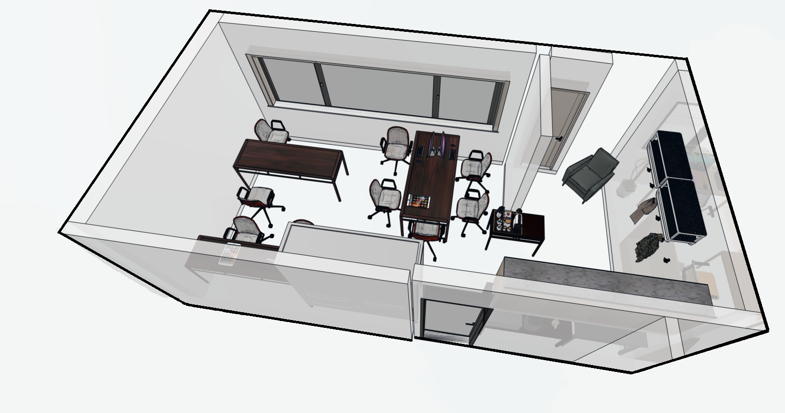

Tryggt och lösningsfokuserat stöd för personer med begränsad kommunikation, genom tydlighet och förutsebarhet.

Grupp 2 präglas av lyhördhet, trygghet och mycket social interaktion. Tempot är ofta lugnt kroppsligt men verbalt levande, med mycket samtal på olika nivåer och sätt.
Gruppen anpassar sig dagligen efter individernas behov och dagsform. Fokus kan vara individuellt eller gemensamt beroende på situation. Trygghet, tydlighet och relationer är en central del av arbetet.